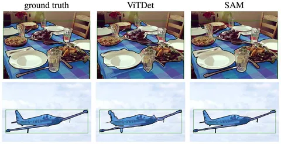

Продолжаем разбирать популярные подходы к построению foundation model. В первой части обсудили SimCLR и DINO, сегодня в программе — Data Engine на примерах OWL и SAM.
У текстового и картиночного доменов есть одна общая черта — переход от стандартных пайплайнов разметки к комбинированным. Это когда одну половину данных обрабатывает человек, а к другой подключается модель.
Хороший пример human-in-the-loop pipeline: RLHF (reinforcement learning from human feedback) завёлся для текстового домена, но не работает для компьютерного зрения. Так для задач обработки изображений появился родственный пайплайн — model-in-the-loop.
Работы Scaling Open-Vocabulary Object Detection (OWLv2) и Segment Anything (SAM) вышли в одно и то же время. Обе они посвящены схожему концепту Data Engine:
1. Модель v1 обучают на датасете, собранном мануально.
2. Модель v1 участвует в псевдоразметке примеров. Разметку по необходимости корректирует человек — получается псевдодатасет.
3. На полученном псевдодатасете обучают модель v2.
4. Модель v2 порождает следующую волну разметки. Алгоритм можно повторять до тех пор, пока не получится модель с нужным качеством.
Дообучение модели на собственных предсказаниях работает, если осмысленно подойти к отбору этих самых предиктов: добавлять в датасет только самые сложные, противоречивые примеры.
Качественную задачу можно свести к количественной, если хорошо настроить конвейерную автоматику движка данных на каждом из этапов:
Пересмотреть подход к отбору данных пытаются во многих современных работах. Например, в DINOv2, Llama2 и Llama3 много внимания уделяют дедупликации данных и улучшению разнообразия датасетов. А также ищут способы повысить эффективность обучения на выросшем корпусе данных.
Разбор подготовил
404 driver not found
